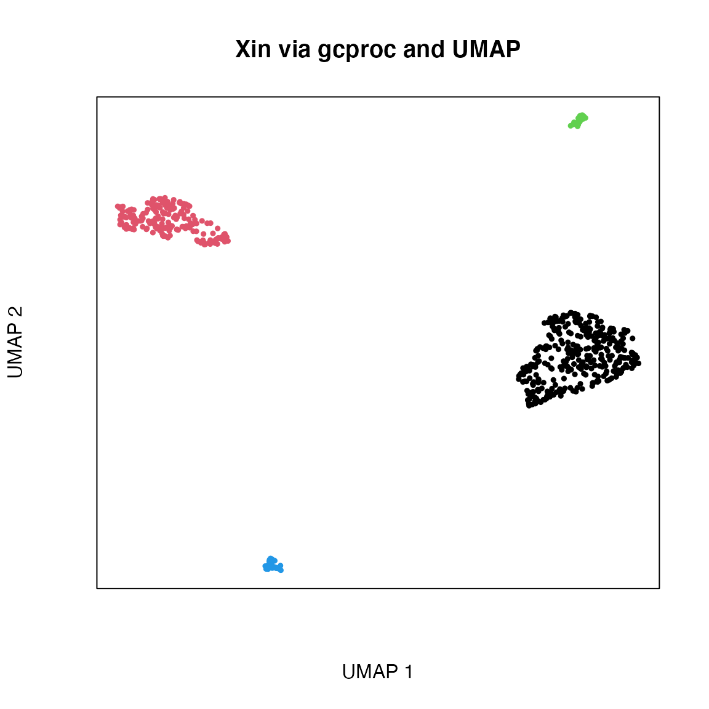
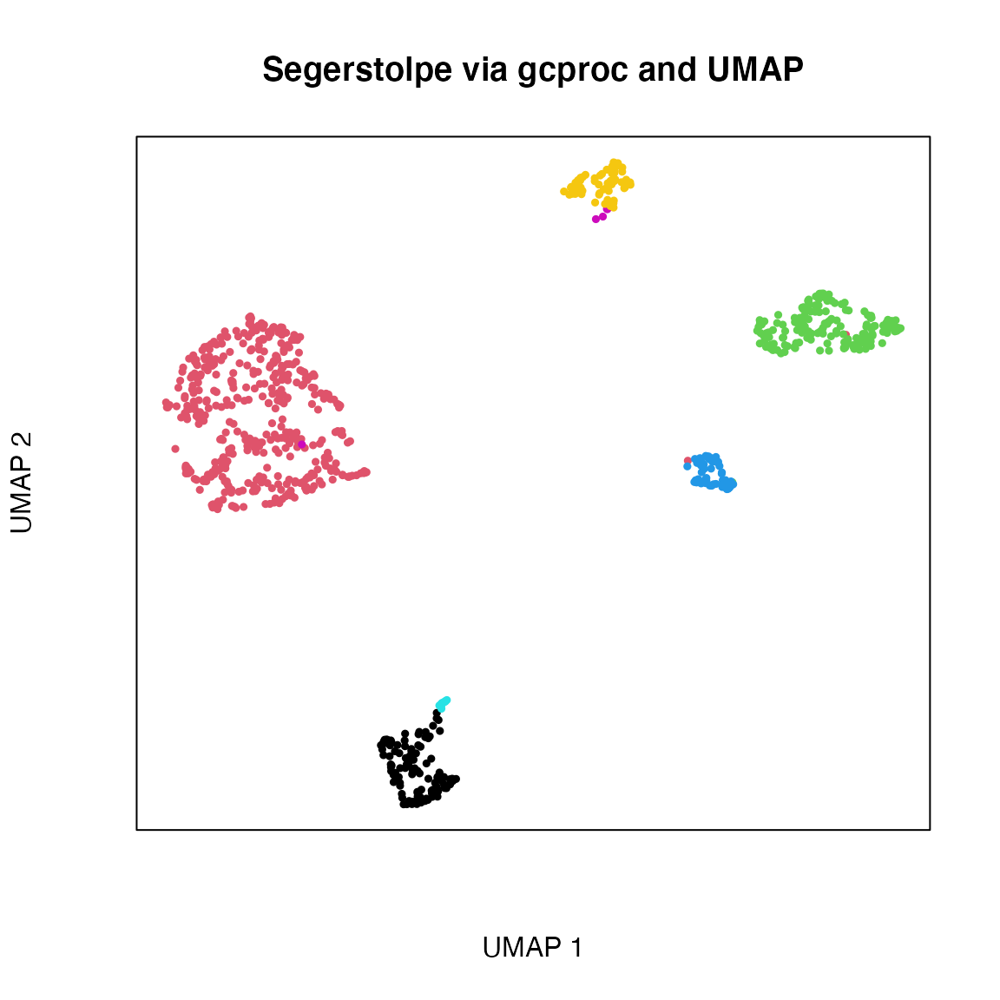
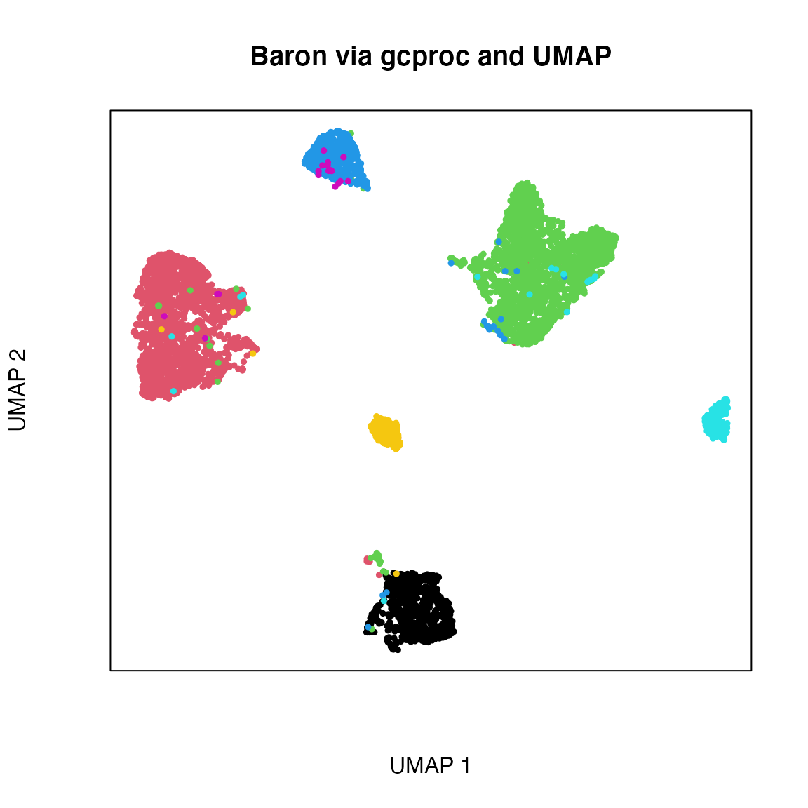
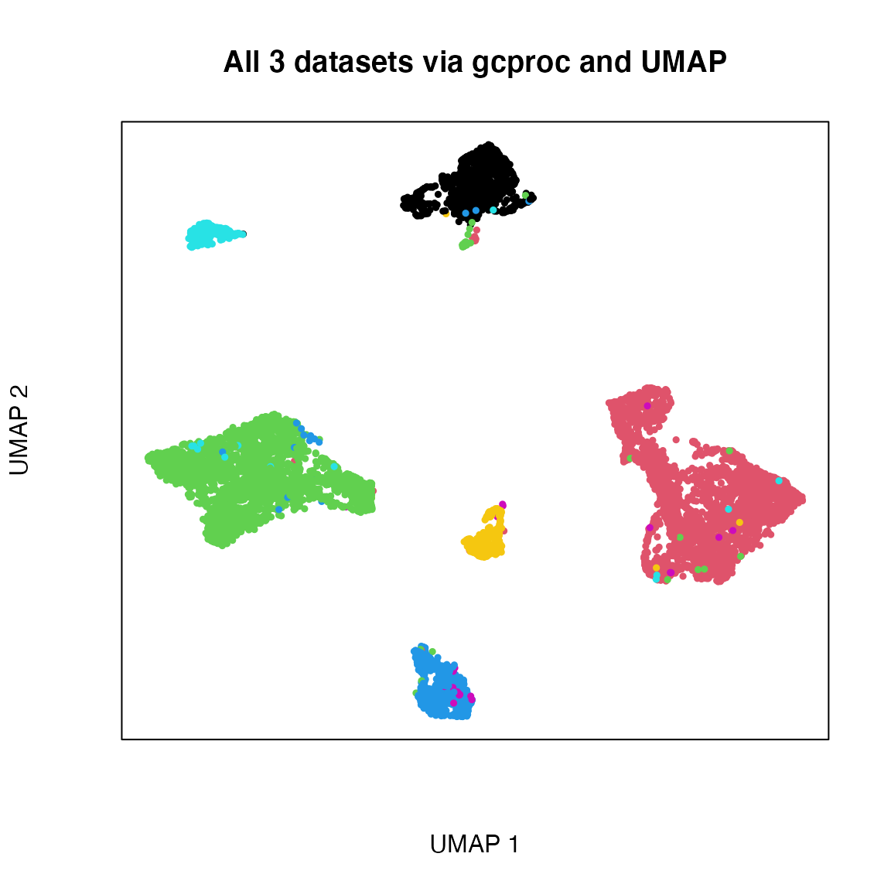

Dimensionality reduction with gcproc
Compiled: August 28, 2021
Dimensionality_reduction_with_gcproc.RmdIntroduction
Generalised Canonical Procrustes (gcproc) is a dimensional reduction technique which encodes samples and features into a smaller subspace that better represents the samples and features in the data. It combines multiple datasets and looks for an improved representation of the data structure shared between datasets. The parameters learned are weights that transforms the original data and can be used to improve projection and embedding techniques such as UMAP (Uniform Manifold Approximation and Projection), and t-SNE (t-distributed Stochastic Neighbourhood Embedding). Encoding the original data improves signal and information quality, where clusters in the projection and embedded space are easier to separate and identify.
Step 0 - Prepare libraries
## Package 'mclust' version 5.4.7
## Type 'citation("mclust")' for citing this R package in publications.
library(irlba)## Loading required package: MatrixStep 1 - Prepare data
Here, three pancreas datasets are integrated with cells aligned. The Baron, Segerstolpe and Xin datasets are analysed. The top 200 genes are taken, and only acinar, alpha, beta, delta, endothelial, epsilon and gamma cells are selected. These datasets are centered and scaled according to the size of the dataset, ready for analysis via gcproc.
load("../../data/pancreas_cell/top_200_genes_pancreas_log_normalised.Rdata")
baron_prepare <- prepare_data(baron,log = F,center = T,scale.norm = T)
xin_prepare <- prepare_data(xin,log = F,center = T,scale.norm = T)
segerstolpe_prepare <- prepare_data(segerstolpe,log = F,center = T,scale.norm = T)Step 2 - Initialise gcproc parameters
Default parameters are retrieved using the function. The verbose print function for explanation of internal running of the code is turned off. Other default parameters are visible by printing the retrieved config variable. Asking the help function via ?extract_config will provide more information about the parameters.
config <- gcproc::extract_config()## $i_dim
## NULL
##
## $j_dim
## NULL
##
## $max_iter
## [1] 150
##
## $tol
## [1] 0.01
##
## $verbose
## [1] TRUE
##
## $init
## [1] "svd-quick"
config$i_dim <- 100
config$j_dim <- 100
config$verbose <- FStep 3 - Run gcproc on all datasets
Given gcproc can only align two datasets at a time, Baron is used as a reference for the alignment of Xin and Segerstolpe. They are combined to enrich the encoding of the gene dimension into an informative and shared subspace for the cell axis to be interpreted.
The covariates for the Xin and Segerstolpe datasets are removed by subtracting the difference at the code level. The code is the latent structure each dataset retains that represents the data generating process. By taking the difference between the scRNA-seq and the covariates codes, the relevant structure will be left. With the residual code, it is decoded to recover the covariate adjusted scRNAseq data.
config$init <- "svd-quick"
gcproc.xin_bar <- gcproc::gcproc(x = xin_prepare,
y = segerstolpe_prepare,
config = config,
reference = "x",
fixed = list(i_dim=F,j_dim=F)
)## Warning in irlba::irlba(cov_x, j_dim, maxit = 10000, verbose = F): You're
## computing too large a percentage of total singular values, use a standard svd
## instead.## Warning in irlba::irlba(cov_y, j_dim, maxit = 10000, verbose = F): You're
## computing too large a percentage of total singular values, use a standard svd
## instead.
gcproc.seg_bar <- gcproc::gcproc(x = xin_prepare,
y = baron_prepare,
config = config,
fixed = list(i_dim=F,j_dim=F),
reference = "x")## Warning in irlba::irlba(cov_x, j_dim, maxit = 10000, verbose = F): You're
## computing too large a percentage of total singular values, use a standard svd
## instead.
## Warning in irlba::irlba(cov_x, j_dim, maxit = 10000, verbose = F): You're
## computing too large a percentage of total singular values, use a standard svd
## instead.Step 4 - Plot dimensionality reduction
The parameters that will transform the [cells] by [gene] space into a [cells] by [k] space, where k is the dimension reduction. Parameters are combined using a summation, similar to how vector spaces are combined.
Notice the clusters representing cell types are visible in each of the first three plots, representing the Baron, Segerstolpe and Xin datasets respectively. The final and fourth plot is the integrated plot of all three datasets - notice that cell types indicated by the coloured points still separate, despite the batch effects of each dataset.
a <- gcproc.seg_bar$main.parameters$u.beta
b <- gcproc.seg_bar$main.parameters$v.beta
c <- gcproc.xin_bar$main.parameters$u.beta
d <- gcproc.xin_bar$main.parameters$v.beta
projection_gcproc <- (a+b+c+d)
plot(umap::umap(xin_prepare%*%projection_gcproc)$layout,
col=as.factor(row.names(xin_prepare)),
xlab = "UMAP 1",
ylab = "UMAP 2",
main = "Xin via gcproc and UMAP",
pch=19,
cex=0.5,
xaxt="n",
yaxt="n")
plot(umap::umap(segerstolpe_prepare%*%projection_gcproc)$layout,
col=as.factor(row.names(segerstolpe_prepare)),
xlab = "UMAP 1",
ylab = "UMAP 2",
main = "Segerstolpe via gcproc and UMAP",
pch=19,
cex=0.5,
xaxt="n",
yaxt="n")
plot(umap::umap(baron_prepare%*%projection_gcproc)$layout,
col=as.factor(row.names(baron_prepare)),
xlab = "UMAP 1",
ylab = "UMAP 2",
main = "Baron via gcproc and UMAP",
pch=19,
cex=0.5,
xaxt="n",
yaxt="n")
plot(umap::umap(rbind(baron_prepare,xin_prepare,segerstolpe_prepare)%*%projection_gcproc)$layout,
col=as.factor(row.names(rbind(baron_prepare,xin_prepare,segerstolpe_prepare))),
xlab = "UMAP 1",
ylab = "UMAP 2",
main = "All 3 datasets via gcproc and UMAP",
pch=19,
cex=0.5,
xaxt="n",
yaxt="n")
Step 5 - Feature importance in dimensionality reduction
Given parameters transform the [cell] by [gene] dataset into a [cell] by [k] subspace, it is possible to use only a few genes in the dimension reduction. This involves a matrix product of two matrices: one as a sub-selected data set of a [cell] by [favorite gene set] and another as a learned parameter of weights of [favorite gene set] by [k].
For example, several pancreatic genes that characterize the cell types are visualized via UMAP below. Correspondingly, a UMAP of all genes that are related to ribosomal function are also included and compared with the previous pancreatic gene set. Notice the distinct difference, with only 15 genes used in the favorite pancreatic gene list, and approximately 70 in the ribosomal gene list.
pancreas_genes_of_interest <- c("INS",
"SST",
"PPY",
"GHRL",
"GCG",
"TTR",
"GAD2",
"IAPP",
"CPE",
"RBP4",
"CD44",
"ANXA2",
"SCG2",
"PPP1R1A",
"KRT8")
id_pancreas_genes <- which(colnames(rbind(baron_prepare,xin_prepare,segerstolpe_prepare)) %in% pancreas_genes_of_interest)
print(c("Total length of favourite pancreatic gene list: ", length(id_pancreas_genes)))## [1] "Total length of favourite pancreatic gene list: "
## [2] "15"
plot(umap::umap(rbind(baron_prepare,xin_prepare,segerstolpe_prepare)[,id_pancreas_genes]%*%(projection_gcproc[id_pancreas_genes,]))$layout,
col=as.factor(row.names(rbind(baron_prepare,xin_prepare,segerstolpe_prepare))),
xlab = "UMAP 1",
ylab = "UMAP 2",
main = paste("All 3 datasets via gcproc and UMAP \n with ",length(id_pancreas_genes)," pancreatic genes",sep=""),
pch=19,
cex=0.5,
xaxt="n",
yaxt="n")
ribosomal_genes_of_interest <- c("RPS|RPL")
id_ribosomal_genes <- grep(pattern = ribosomal_genes_of_interest, x = colnames(rbind(baron_prepare,xin_prepare,segerstolpe_prepare)))
print(c("Total length of ribosomal gene list: ", length(id_ribosomal_genes)))## [1] "Total length of ribosomal gene list: "
## [2] "68"
plot(umap::umap(rbind(baron_prepare,xin_prepare,segerstolpe_prepare)[,id_ribosomal_genes]%*%(projection_gcproc[id_ribosomal_genes,]))$layout,
col=as.factor(row.names(rbind(baron_prepare,xin_prepare,segerstolpe_prepare))),
xlab = "UMAP 1",
ylab = "UMAP 2",
main = paste("All 3 datasets via gcproc and UMAP \n with ",length(id_ribosomal_genes)," RPS or RPL genes",sep=""),
pch=19,
cex=0.5,
xaxt="n",
yaxt="n")